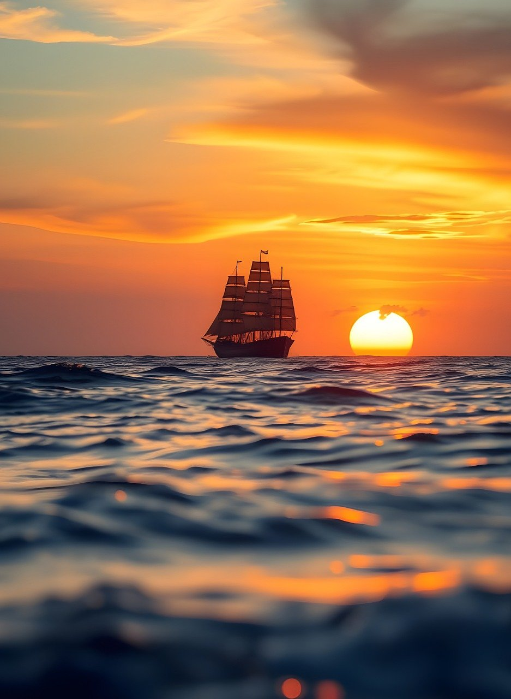
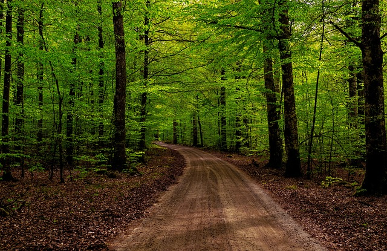

Blekinge
Blekinge är ett landskap i sydöstra Sverige som gränsar i väster till Skåne, i norr till Småland och i öster och söder till Östersjön. Blekinge har knappt 160 000 invånare. Det är Sveriges till ytan näst minsta landskap (efter Öland) och det minsta som ligger på fastlandet. Landskapet har samma geografiska sträckning som Blekinge län. Blekinge kallas ofta för 'Sveriges trädgård' och har dessutom en skärgård. Karlskrona är Blekinges största stad.
Namnet
Redan i en fornengelsk berättelse från 890-talet nämns Blekinge som Blekingēg (-ēg betyder 'ö, strandbygd'). Namnet har bildats till ett fjärdnamn *Blek 'den glänsande, den stilla', som avser en del av det stora fjärdområdet mellan Listerby och Torhamn i sydöstra Blekinge. I slutet av 1100-talet skrevs landskapsnamnet som Blegunc. Till *Blek har avledningsändelsen -ung (senare -ing och -inge) lagts. Ändelsen betecknar bygden runt fjärden.
Dialekt
Historia
Under den svenska stormaktstiden upplevde Blekinge en storhetstid. Karlskrona anlades ute på ön Trossö 1680 som en ny svensk marinbas och var trettio år senare rikets tredje stad med mer än 10 000 invånare. Det skyddade läget i den blekingska skärgården, där befästningsanläggningar enkelt kunde försvara platsen kombinerat med en rik tillgång på ek på fastlandet, spelade in när man synade platsen för den nya marinbasen. Även Karlshamn grundades under samma tid, medan de äldre etablerade städerna Ronneby och Sölvesborg somnade in. Karlskrona och Karlshamn låg i närheten av de medeltida handelsplatserna Lyckeby respektive Elleholm och ersatte därmed även dessa. Under 1700-talet var landskapet Sveriges mest urbaniserade med en fjärdedel av invånarna som bodde i städer. I det danska fälttåget i Skåne och Blekinge 1709–1710 försökte danskarna återta Blekinge, men lyckades bara ta sig till Karlshamn och inta staden. Snart kom svenska förstärkningar och danskarna fick snart bege sig tillbaka över Öresund.
Under Andra världskriget 1939-1945 drabbas även Blekinge. Natten mellan 28 och 29 april 1943 kommer mullrande motorer från flygplan in över Verkö i Lösens socken följt av 8 till 10 kraftiga detonationer. Nästa morgon visar sig ett antal bombgropar på 5 till 10 meters diameter och 1 till 2 meters djup. På splitterdelar från bomberna finns ryska bokstäver som avslöjar vilka som bombat Verkö. Bomberna hamnade i ett skogsparti och ingen människa skadades.[14] I november 1943 var det dags igen. En av Hitlers V1-robotar slår ner på ön Utlängan och det blir en kraftig smäll. Den 27 juli klockan 17.34 år 1944 drabbas länet åter igen av kriget. I Mosstofta nära Duverum i Jämjö socken slår för andra gången en av Hitlers V1-robotar ner i länet. Roboten är 14 meter lång och väger 12 ton kreverar i en granskog och ingen människa skadas. Sannolikt kom roboten från provskjutningsbasen i Peendemünde på ön Usedom och målet var troligen Bornholm, men något gick snett.
Blekinges historia - YouTubeGeografi

Från det småländska höglandet vid en höjd av 130 till 170 meter över havet sänker sig landskapet mot såväl syd som öst ner mot Östersjön. Norra delen, "skogsbygden", är karg och mager med många berg och kärr, och skogarna där består huvudsakligen av barrträd. Den därefter följande "mellanbygden" med sina många små sjöar och vattendrag och ännu mera "strandbygden" har bördig jord och bär många lövträd, bland vilka boken gör sig gällande, och en rik undervegetation.
Vattendragens huvudsakliga riktning är sydlig. De högsta bergen finns i den nordvästra delen av landskapet, där de når en höjd av omkring 180–190 meter över havet. Den södra kusten är mycket sönderskuren och omgiven av en vidsträckt skärgård, i synnerhet vid den östra delen, utanför vilken finns även större öar.
Boafalls backe (177,56 m ö.h.) i Olofströms kommun räknades officiellt som Blekinges högsta punkt mellan 1837 och 2006. Vid kontrollmätning har man nu konstaterat att den korrekta lokaliseringen av landskapets högsta punkt är Rävabacken i byn Farabol (Olofströms kommun) med en höjd av 189,65 meter över havet. Denna plats invigdes 2006-08-12 som Blekinges högsta punkt vid en officiell ceremoni.
Klimatet i Blekinge varierar inte av större omfattning utan är ganska jämnt fördelat över landskapets delar med för det mesta av havskaraktär med förhållandevis milda vintrar och behagliga somrar. Höstarna är särskilt milda då det efter sommaren uppvärmda Östersjön blåser in värme och fukt, vilket tidvis ger mycket nederbörd samt även en del blåst.